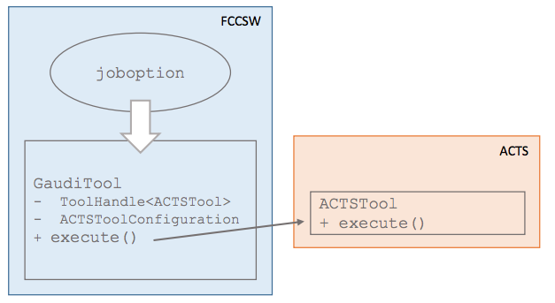
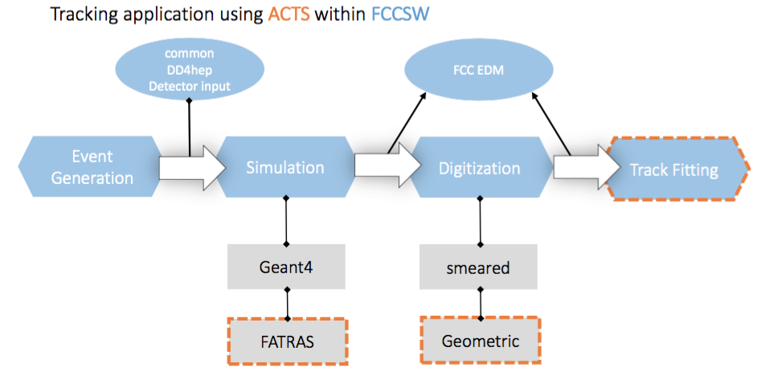
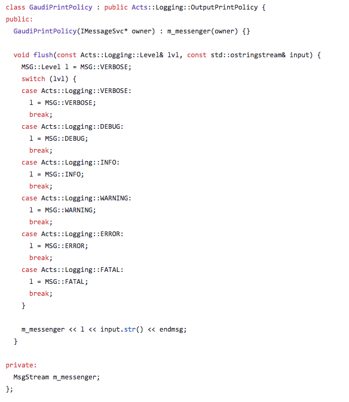
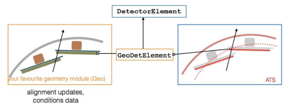
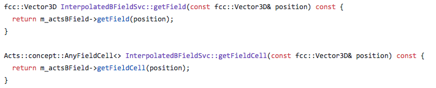
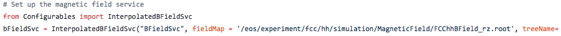
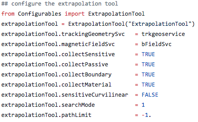
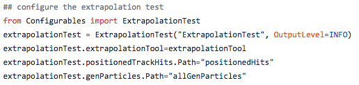
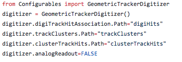

Warning
This website is outdated!. ACTS documentation has moved to ReadTheDocs at:
acts.readthedocs.io
Usage for the Future Circular Collider study
Acts is used as tracking toolkit for the Future Circular Collider (FCC) design study. The FCC Software suite FCCSW uses Gaudi as an event processing framework, DD4hep (Detector Description for High Energy Physics) for the geometry description and Geant4 as a simulation package. This chapter describes the currently ongoing integration and usage of Acts in FCCSW. Acts makes use of a plugin mechanism to allow interfacing experiment software where necessary, e.g. geometry, identification, event data model, magnetic field. In the core part Acts reduces the dependencies to a minimum using configuration structs which can be interfaced by the user. For more information please see the general integration chapter.
Integration of Acts into FCCSW
Gaudi Services, Tools and Algorithms are used to interface to Acts. They either use provided functionality directly or act as wrapper internally holding an instance of the Acts Object. Using the python job option the Acts tools can be configured (using their configuration structs) by the user at runtime:

In FCCSW the tracking toolkit is not only used for track fitting but has various applications. For instance the magnetic field service of FCCSW is based on the Acts implementation. Another example is the application of fast simulation using the extrapolation through the tracking geometry. Since for the FCChh conceptual design study no specific detector technologies are selected yet, Acts is used to perform geometric digitization.

Forwarding logging messages to Gaudi
As explained here, the Acts logging messages can be forwarded to the Gaudi message service during an event by overloading the default Acts logging implementation. In the following one can see, for example, overload of the Acts print policy (definition how and where to print):

Geometry Translation
In FCCSW we require to have one common source of detector description for all applications, including the differnt types of simulation and reconstruction. In order to allow fast reconstruction Acts internally uses a simplfied tracking geometry.
For automatic and consistent geometry translation from DD4hep the plugin mechanism was used and a DD4hepPlugin established. The DD4hepPlugin provides a convenience function handing back the world volume of the Acts tracking geometry from the DD4hep detector.
Inside FCCSW a tracking geometry service was established which calls the function and hands back the Acts tracking geometry.
The sensitive surfaces in the tracking geometry have a direct link to the underlying detector element of Acts, which allows to handle conditions data and alignment.

Magnetic Field implementation
As explained here, Acts is agnostic to the magnetic field implementation, as long as it follows the given magnetic field concept.
For convenience Acts provides already two different magentic field implementations which are being used inside FCCSW. Firstly a configurable constant magnetic field service and an interpolated magnetic field service which linearly interpolates the magnetic field within cells of a given grid. To stay independent from the file format Acts provides convenience methods to facilitate creating the grid from std vectors of grid points. Reading in the values from the actual file (e.g. root, txt/csv) happens inside FCCSW.
The two configurable FCC magnetic field service implementations (constant and interpolated) hold the dedicated Acts magnetic field implementation as a member and forward the calls to it:

The FCChh magnetic field map which acts as input for the FCC interpolated magnetic service can be easily configured using the gaudi job option file:

Extrapolation
The extrapolation through the tracking geometry is used during reconstruction. A second application of the extrapolation through the tracking geometry is for fast simulation. In order to allow both applications to use the extrapolation with different configuration a Gaudi Tool which holds an instance to the Acts extrapolation was created. This tool can be configured differently for both applications at runtime:

The extrapolation tool can then be used by an Gaudi algorithm which handles the translations from and to the FCC edm. For example in the ExtrapolationTest below the reads in generated particles from the event store and after extrapolating through the tracking geometry, translates the output into FCC track hits:

Geometric Digitization
Because the specific detector technologies which will be used for the future hadron hadron collider are not known yet the Acts geometric digitzation tools are being implemented for FCChh.
Every detector element inside Acts holds a pointer to a DigitizationModule. The digitization module has information about readout relevant information e.g. segmentation, readout drift direction, lorentz angle. The DD4hepPlugin enables either automatic translation from the given readout information from DD4hep during the conversion or the possibility that the user can append the digitization module. The first version creates one digitzation module for every sensitive surface which is very expensive in CPU. Since many sensitive detector elements will have the same readout segmentation, the second variation allows the user to once create a shared instance of a digitization module and append it to many mdoules. Convenience functions which hand back the Acts digitization module from a given dd4hep readout have been created.
The Acts geometric digitization determines the cells hit by a particle given the hit position and the momentum direction. Afterwards the clusters are created from the pixels using a connected components analysis algorithm from boost. The user can decide if pixels sharing a common corner or a common edge should be merged.
Using the Acts digitzation tools one can emulate digital readout as well as analogue readout which smears the energy deposit in the cells.
Below one can see how the GeometricTrackerDigitizer, which is currently being developed inside FCCSW and uses the Acts digitization tools, can be used in the python job options. It reads in hits (digiTrackHitAssociation) produced by FCC geant4 full simulation and writes out trackClusters to the FCC event store:
